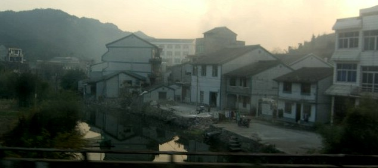

| Reflections | BACK TO DATE PAGE | ||||||||||
| The weather in Qingdao is dry and sunny but cold. I wonder what these pictures taken in early December during a trip down south would look like if taken today. Millions and millions of Chinese in the south central region are suffering through their most difficult winter in fifty years, and Chinese migrant workers along the coast are being prevented from travelling home for New Year's--a personal tragedy for all concerned because this is often their only trip home for the year. | |||||||||||
|  | |||||||||||
| BACK TO DATE PAGE | |||||||||||